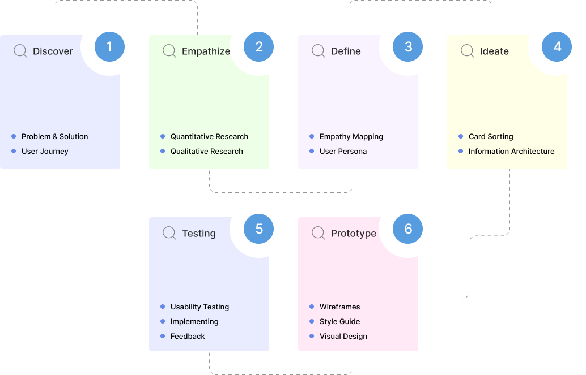
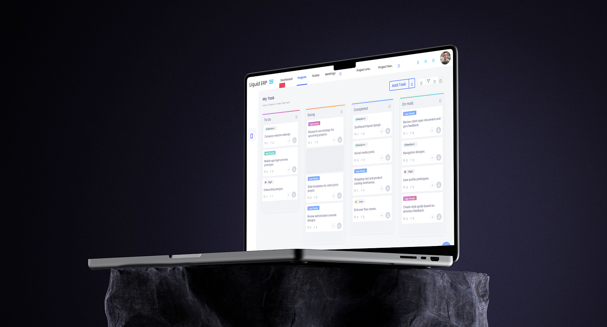
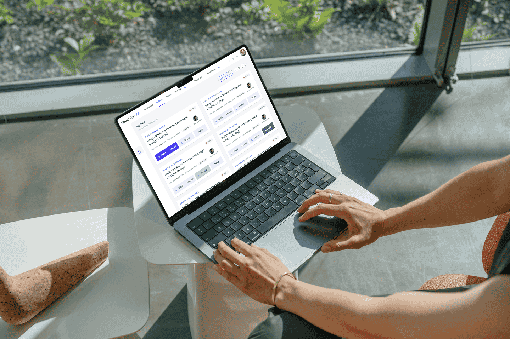
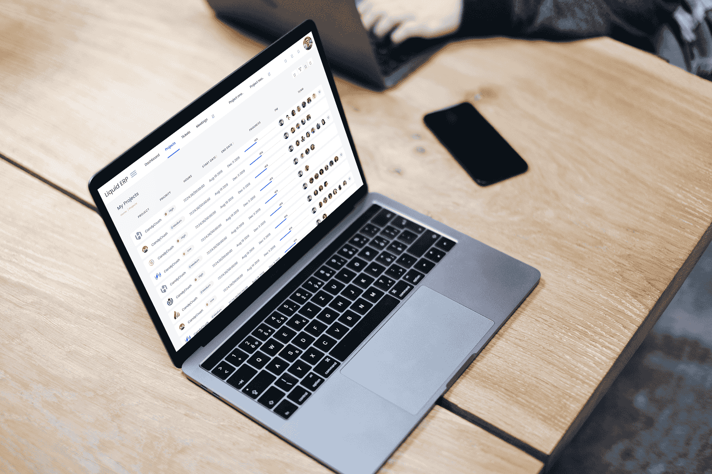

Liquid ERP
Simplifying enterprise workflows through smart dashboards and real-time tracking.
What is Liquid ERP?
End-to-end ERP management solution built for teams to track, plan, and execute projects efficiently.
Liquid ERP is a minimalist task management SaaS platform designed to help individuals and small teams manage their workload with absolute simplicity. It focuses on delivering the core essentials of task tracking — what needs to be done — without unnecessary complexity.
Problem Statement
Many users, especially freelancers or early-stage teams, find platforms like Jira, ClickUp, and Asana to be overly complex and time-consuming. These users want a tool that helps them focus on getting work done, not figuring out how the tool works.
Target Audience
The platform is tailored for freelancers, product managers, and small remote teams who need a simple, yet robust way to track their work. These users often feel frustrated by bulky interfaces, steep learning curves, and overwhelming features that clutter their workspace with features they never use.
Design Process

Competitive Analysis
We analyzed popular tools in the market to identify their strengths, weaknesses, and gaps. This informed Liquid ERP's opportunities to create a more user-friendly and tailored solution.
| Ease of Use | ✕ | ✓ | ✓ |
|---|---|---|---|
| Onboarding Simplicity | ✓ | ✓ | ✕ |
| Customization | ✓ | ✓ | ✕ |
| Task Creation Speed | ✕ | ✕ | ✓ |
| UX Clarity & Focus Mode | ✕ | ✕ | ✕ |
Empathy Map
We created an empathy map to better understand the user's thoughts, feelings, and behaviors, ensuring Liquid ERP is centered around a solution that truly meets their needs.
- "I wish all project data were in one place."
- Feels overwhelmed by multiple tools and scattered updates.
- Worries about missing deadlines due to poor visibility.
- Feels frustrated when reports take too long to compile.
- Thinks the system should be intuitive and adapt to their workflow, not the other way around.
- Wants to feel in control and confident about project status at any time.
- "Can you send me the latest status report?" — from senior management.
- "I couldn't update my task because the system was too slow." — from team members.
- "We need to cut down on manual reporting errors." — from finance or operations.
- "Why do we still use outdated tools?" — from peers.
- "Our clients need faster progress updates." — from stakeholders.
- "I'll just update this in Excel for now."
- "Let me double-check with the team before I finalize the report."
- "This dashboard is too cluttered; I can't find what I need."
- Repeatedly switches between multiple modules or apps to gather information.
- Creates manual summaries or slide reports for management.
- Frequently messages or calls team members for task updates.
- Sees multiple disconnected tools — one for projects, one for finance, another for communication.
- Cluttered dashboards filled with irrelevant widgets.
- Repetitive manual data entry screens.
- Delayed status updates and inconsistent data.
- Team members struggling to use or understand the system.
- Competitors or modern SaaS tools offering cleaner, simpler UI experiences.
UI Design
Designed a clean, intuitive interface that reflects the user's need for simplicity, speed and focus.


